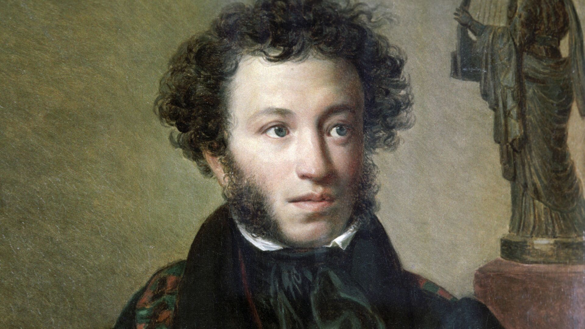

My.html

Стих Александра Сергеевича Пушкина
У лукоморья дуб зелёный (отрывок из поэмы «Руслан и Людмила»)
У лукоморья дуб зелёный;
Златая цепь на дубе том:
И днём и ночью кот учёный
Всё ходит по цепи кругом;
Идёт направо — песнь заводит,
Налево — сказку говорит.
Там чудеса: там леший бродит,
Русалка на ветвях сидит;
Там на неведомых дорожках
Следы невиданных зверей;
Избушка там на курьих ножках
Стоит без окон, без дверей;
Там лес и дол видений полны;
Там о заре прихлынут волны
На брег песчаный и пустой,
И тридцать витязей прекрасных
Чредой из вод выходят ясных,
И с ними дядька их морской;
Там королевич мимоходом
Пленяет грозного царя;
Там в облаках перед народом
Через леса, через моря
Колдун несёт богатыря;
В темнице там царевна тужит,
А бурый волк ей верно служит;
Там ступа с Бабою Ягой
Идёт, бредёт сама собой,
Там царь Кащей над златом чахнет;
Там русский дух… там Русью пахнет!
И там я был, и мёд я пил;
У моря видел дуб зелёный;
Под ним сидел, и кот учёный
Свои мне сказки говорил.